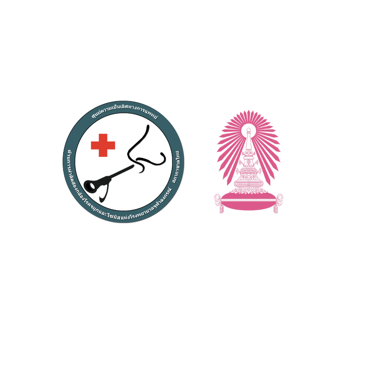

<!-- ส่วนเนื้อหาหลัก -->
    <main class="py-16 bg-gray-50" id="course-details">
        <div class="max-w-4xl mx-auto px-4 sm:px-6 lg:px-8">
            
            <div class="text-center mb-16">
                <!-- 1. แก้ไขโลโก้ตรงนี้ (เอาแท็ก  ออกมาใช้งานจริง) -->
                <div class="w-28 h-28 mx-auto bg-white rounded-full flex items-center justify-center mb-6 shadow-md border border-gray-100 overflow-hidden">
                    <!-- ตรวจสอบให้แน่ใจว่าไฟล์ชื่อ logorhino.png มีอยู่จริงในโฟลเดอร์เดียวกัน -->
                    
                </div>
                
                <h3 class="text-base text-gray-500 font-semibold mb-4 uppercase tracking-widest">ดำเนินการโดย</h3>
                <p class="text-xl md:text-2xl text-gray-800 leading-relaxed font-medium mb-2">
                    ศูนย์ความเป็นเลิศทางการแพทย์การผ่าตัดส่องกล้องโรคจมูกและไซนัส แห่งโรงพยาบาลจุฬาลงกรณ์
                </p>
                <p class="text-xl md:text-2xl text-gray-800 leading-relaxed font-medium">
                    และหน่วยนาสิกวิทยาและภูมิแพ้ ภาควิชาโสต ศอ นาสิกวิทยา คณะแพทยศาสตร์ จุฬาลงกรณ์มหาวิทยาลัย
                </p>
            </div>

            <div class="flex justify-center mb-16">
                <div class="bg-blue-50 border border-blue-100 rounded-2xl px-10 py-5 flex items-center gap-4 shadow-sm">
                    <div class="w-3 h-3 bg-blue-600 rounded-full blink-dot"></div>
                    <span class="text-2xl font-bold text-brand-blue">
                        เปิดรับสมัคร จำนวน 1 ตำแหน่ง
                    </span>
                </div>
            </div>

            <div class="mb-16">
                <!-- 2. ปรับข้อความการเลือกหลักสูตรให้เป็นทางการ -->
                <div class="border-b border-gray-200 pb-4 mb-8">
                    <h3 class="text-2xl font-bold text-brand-blue mb-3 flex items-center gap-3">
                        <i class="fa-solid fa-graduation-cap"></i> หลักสูตรที่เปิดรับสมัคร
                    </h3>
                    <p class="text-lg text-gray-700 font-medium">
                        ผู้สมัครสามารถพิจารณาเลือกเข้าศึกษาในหลักสูตรใดหลักสูตรหนึ่ง ตามรายละเอียดดังต่อไปนี้
                    </p>
                </div>
                
                <div class="grid grid-cols-1 md:grid-cols-2 gap-8">
                    <!-- หลักสูตร 2 ปี (ส่วนนี้เหมือนเดิม) -->
                    <div class="bg-white p-8 rounded-2xl shadow-sm border border-gray-100 flex flex-col h-full hover:shadow-md transition-shadow">
                        <div class="bg-brand-light text-brand-blue font-bold px-5 py-2 rounded-lg inline-block w-max mb-6 text-lg">
                            หลักสูตร 2 ปี
                        </div>
                        <!-- โค้ดส่วนหลักสูตร 2 ปีด้านในยังคงเหมือนเดิม... -->
                        <p class="text-gray-700 mb-4 font-medium text-lg">
                            <i class="fa-regular fa-calendar-days mr-2 text-blue-500"></i> 1 กรกฎาคม 2570 - 30 มิถุนายน 2572
                        </p>
                        <p class="text-gray-600 mb-8 leading-relaxed flex-grow text-lg">
                            ศึกษาและปฏิบัติงานในโรงพยาบาลจุฬาลงกรณ์ / คณะแพทยศาสตร์ จุฬาลงกรณ์มหาวิทยาลัย ตลอดหลักสูตร
                        </p>
                        <div class="bg-gray-50 p-6 rounded-xl border border-gray-100">
                            <h4 class="font-bold text-gray-800 mb-4 text-lg">เมื่อสำเร็จการศึกษาจะได้รับ:</h4>
                            <ul class="space-y-4 text-base md:text-lg text-gray-600 leading-relaxed">
                                <li class="flex items-start gap-3"><i class="fa-solid fa-circle-check text-green-500 mt-1.5"></i> ปริญญาโท สาขาวิทยาศาสตร์มหาบัณฑิต (คณะแพทยศาสตร์ จุฬาลงกรณ์มหาวิทยาลัย)</li>
                                <li class="flex items-start gap-3"><i class="fa-solid fa-circle-check text-green-500 mt-1.5"></i> วุฒิบัตรอนุสาขานาสิกวิทยา โรคภูมิแพ้ และการผ่าตัดฐานกะโหลกศีรษะส่วนหน้า (จากแพทยสภา)</li>
                                <li class="flex items-start gap-3"><i class="fa-solid fa-circle-check text-green-500 mt-1.5"></i> ประกาศนียบัตรในวิชาชีพเวชกรรม ด้านนาสิกวิทยาและโรคภูมิแพ้ (โรงพยาบาลจุฬาลงกรณ์)</li>
                            </ul>
                        </div>
                    </div>

                    <!-- หลักสูตร 3 ปี (ส่วนนี้เหมือนเดิม) -->
                    <div class="bg-white p-8 rounded-2xl shadow-sm border border-gray-100 flex flex-col h-full hover:shadow-md transition-shadow">
                        <div class="bg-indigo-50 text-indigo-800 font-bold px-5 py-2 rounded-lg inline-block w-max mb-6 text-lg">
                            หลักสูตร 3 ปี
                        </div>
                        <!-- โค้ดส่วนหลักสูตร 3 ปีด้านในยังคงเหมือนเดิม... -->
                        <p class="text-gray-700 mb-4 font-medium text-lg">
                            <i class="fa-regular fa-calendar-days mr-2 text-indigo-500"></i> 1 กรกฎาคม 2570 - 30 มิถุนายน 2573
                        </p>
                        <p class="text-gray-600 mb-8 leading-relaxed flex-grow text-lg">
                            ศึกษาและปฏิบัติงาน 2 ปีแรกที่โรงพยาบาลจุฬาลงกรณ์ สำหรับปีที่ 3 สามารถกลับไปปฏิบัติงาน ณ ต้นสังกัดได้
                        </p>
                        <div class="bg-gray-50 p-6 rounded-xl border border-gray-100">
                            <h4 class="font-bold text-gray-800 mb-4 text-lg">เมื่อสำเร็จการศึกษาจะได้รับ:</h4>
                            <ul class="space-y-4 text-base md:text-lg text-gray-600 leading-relaxed">
                                <li class="flex items-start gap-3"><i class="fa-solid fa-circle-check text-green-500 mt-1.5"></i> ปริญญาเอก สาขาวิทยาศาสตร์ดุษฎีบัณฑิต (คณะแพทยศาสตร์ จุฬาลงกรณ์มหาวิทยาลัย)</li>
                                <li class="flex items-start gap-3"><i class="fa-solid fa-circle-check text-green-500 mt-1.5"></i> วุฒิบัตรอนุสาขานาสิกวิทยา โรคภูมิแพ้ และการผ่าตัดฐานกะโหลกศีรษะส่วนหน้า (จากแพทยสภา)</li>
                                <li class="flex items-start gap-3"><i class="fa-solid fa-circle-check text-green-500 mt-1.5"></i> ประกาศนียบัตรในวิชาชีพเวชกรรม ด้านนาสิกวิทยาและโรคภูมิแพ้ (โรงพยาบาลจุฬาลงกรณ์)</li>
                            </ul>
                        </div>
                    </div>
                </div>
            </div>
